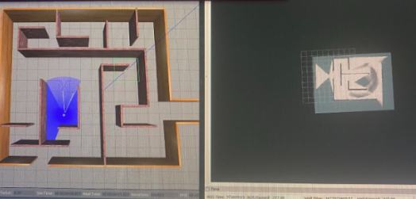

Researched the Boston Dynamics' Spot robot to gain insights into its design, dimensions, and functionalities. Conceptualized the design of the robotic dog, considering factors like size, weight distribution, and required range of movements.
Created a 3D model of the robotic dog's main body structure using SolidWorks. Designed the legs with appropriate hinges and joints, allowing for realistic movements. Leveraged SolidWorks' assembly features to ensure proper motion.
Identified the necessary components such as motors, sensors, and actuators. Sourced these components from reputable suppliers to ensure compatibility and quality.
Used SolidWorks' motion simulation tools to virtually test the robotic dog's movements. Iterated on the design based on simulation results to improve its performance and movement capabilities.

Integrated SLAM techniques and the Nav2 stack within a ROS2 environment to realize seamless autonomous maze-solving and efficient room navigation. This amalgamation allowed the robot to dynamically map its surroundings, precisely localize itself, and adeptly maneuver through intricate mazes and diverse rooms. The following outlines the process: